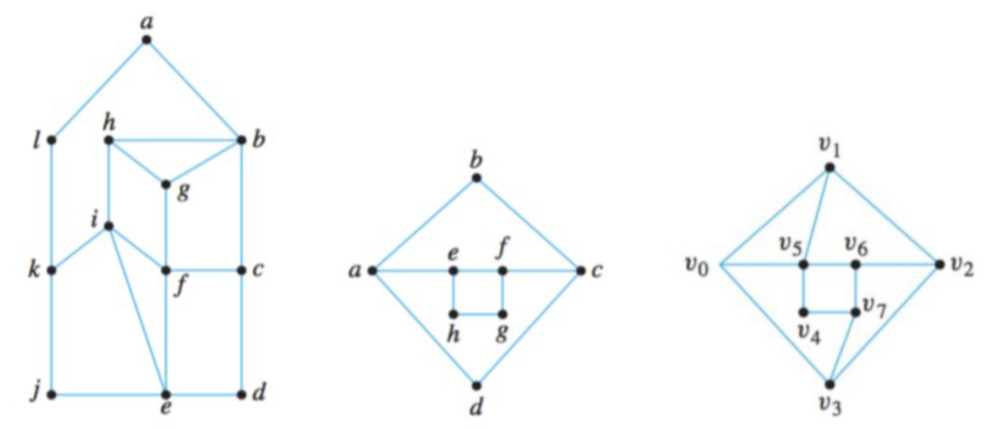
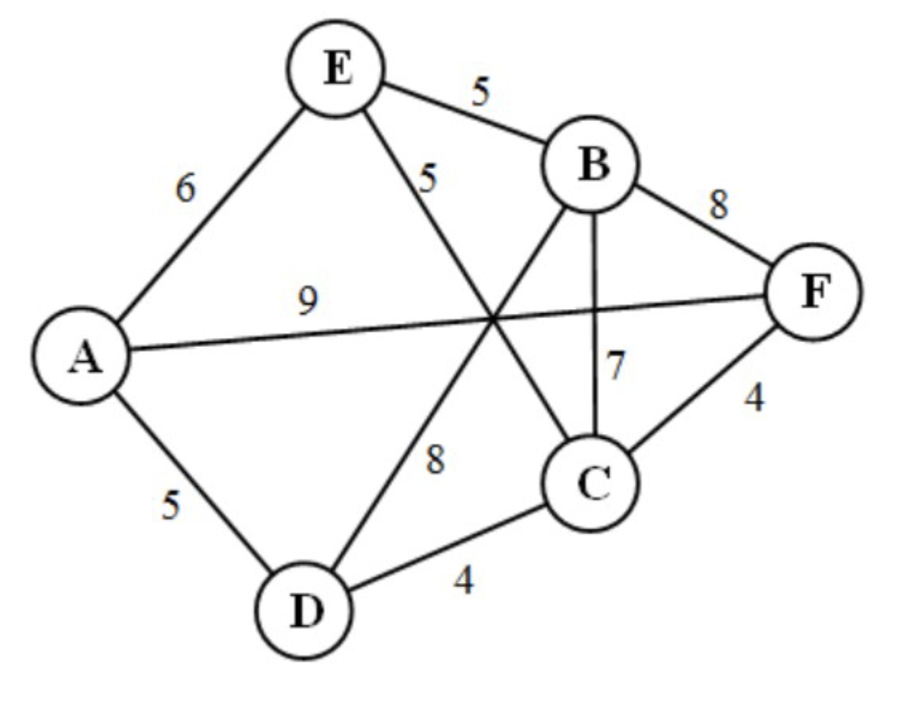

W12. Eulerian Paths and Cycles, Hamiltonian Paths and Cycles, Fleury’s Algorithm, Dijkstra’s Algorithm
Zakhar Podyakov
2025-11-22
1. Summary
1.1 Introduction to Graph Paths and Cycles
In graph theory, paths and cycles are fundamental concepts that describe how we can traverse a graph. A path is a sequence of vertices where each consecutive pair is connected by an edge, and no edge is repeated. A cycle is a path that starts and ends at the same vertex. These concepts become particularly interesting when we impose additional constraints, such as visiting every edge exactly once (Euler paths) or visiting every vertex exactly once (Hamilton paths).
Understanding these concepts is crucial because they model real-world problems: from finding optimal routes in navigation systems to solving puzzles like the famous Seven Bridges of Königsberg problem.
1.2 Eulerian Paths and Cycles
An Eulerian path (also called an Euler trail) is a path in a graph that visits every edge exactly once. If such a path starts and ends at the same vertex, forming a cycle, it is called an Eulerian cycle (or Euler tour).
1.2.1 Historical Context
The study of Eulerian paths originated with Leonhard Euler’s solution to the Seven Bridges of Königsberg problem in 1736. The city of Königsberg had seven bridges connecting different land masses, and citizens wondered if it was possible to walk through the city crossing each bridge exactly once. Euler proved it was impossible by analyzing the problem as a graph where land masses are vertices and bridges are edges.
1.2.2 Necessary and Sufficient Conditions
A remarkable property of Eulerian graphs is that we have necessary and sufficient conditions for their existence:
A connected graph is Eulerian (has an Euler cycle) if and only if every vertex has even degree.
A connected graph has an Euler path if and only if it has exactly zero or exactly two vertices with odd degree.
These conditions give us a simple way to determine whether a graph has an Eulerian path or cycle just by examining vertex degrees.
Proof Intuition: Why must degrees be even for an Euler cycle? Each time we visit a vertex in an Euler tour, we use one edge to enter and one edge to leave. If a vertex appears \(k\) times in the tour, it contributes \(2k\) to its degree. Therefore, all vertices must have even degree.
A graph with an Euler cycle is called an Eulerian graph, and a graph with an Euler path (but not a cycle) is called semi-Eulerian.
1.3 Fleury’s Algorithm
While the conditions tell us when an Eulerian path exists, Fleury’s algorithm provides a method to actually construct such a path. The algorithm follows a simple rule: at each step, choose an edge that doesn’t disconnect the remaining graph unless there’s no alternative.
More formally, Fleury’s algorithm works as follows:
Start at an arbitrary vertex \(v_0\) (or at a vertex of odd degree if constructing an Euler path).
At each step, from the current vertex, choose an edge that:
Has not been traversed yet
Does not disconnect the remaining untraversed graph (i.e., is not a bridge), unless there is no other choice
The key insight is to avoid creating disconnected components prematurely, which would prevent completing the path.
1.4 Hamiltonian Paths and Cycles
While Eulerian paths focus on edges, Hamiltonian paths focus on vertices. A Hamiltonian path is a path that visits every vertex exactly once. If such a path forms a cycle, it is called a Hamiltonian cycle (or Hamilton circuit).
1.4.1 Historical Context
The concept is named after Sir William Rowan Hamilton, who in 1857 created the Icosian puzzle. The puzzle involved a dodecahedron (a 12-faced polyhedron), and the goal was to find a path along the edges that visits every vertex exactly once and returns to the starting point.
1.4.2 The Difficulty: No Necessary and Sufficient Conditions
Unlike Eulerian graphs, there are no known simple necessary and sufficient conditions for determining whether a graph is Hamiltonian. This makes the Hamiltonian path problem significantly harder—it is actually NP-complete, meaning no efficient algorithm is known for general graphs.
A graph with a Hamiltonian cycle is called Hamiltonian, and a graph with a Hamiltonian path (but not necessarily a cycle) is called semi-Hamiltonian.
1.5 Sufficient Conditions: Ore’s and Dirac’s Theorems
While we lack necessary and sufficient conditions, we do have sufficient conditions that guarantee a graph is Hamiltonian:
1.5.1 Dirac’s Theorem (1952)
If \(G\) is a simple graph with \(n \geq 3\) vertices, and every vertex has degree at least \(\frac{n}{2}\), then \(G\) is Hamiltonian.
Interpretation: If each vertex is connected to at least half of the other vertices, the graph must contain a Hamiltonian cycle.
1.5.2 Ore’s Theorem (1960)
If \(G\) is a simple graph with \(n \geq 3\) vertices, and for every pair of non-adjacent vertices \(u\) and \(v\), we have \(\deg(u) + \deg(v) \geq n\), then \(G\) is Hamiltonian.
Interpretation: Ore’s theorem is more general than Dirac’s theorem. It doesn’t require every vertex to have high degree individually, but rather that non-adjacent vertices together have sufficient connections.
Note that Dirac’s theorem is a special case of Ore’s theorem: if \(\deg(u) \geq \frac{n}{2}\) and \(\deg(v) \geq \frac{n}{2}\), then \(\deg(u) + \deg(v) \geq n\).
1.6 Dijkstra’s Algorithm
Dijkstra’s algorithm solves a different problem: finding the shortest path from a source vertex to all other vertices in a weighted graph with non-negative edge weights.
1.6.1 How It Works
The algorithm maintains a set of vertices whose shortest distance from the source is known (visited vertices) and iteratively adds vertices to this set:
Initialize the source vertex with distance 0 and all other vertices with distance \(\infty\).
Mark all vertices as unvisited. Set the source as the current vertex.
For the current vertex, update the tentative distances to all unvisited neighbors. The tentative distance is the minimum of the current tentative distance and the distance through the current vertex.
Mark the current vertex as visited (its shortest distance is now finalized).
Among all unvisited vertices, select the one with the smallest tentative distance as the new current vertex.
Repeat steps 3-5 until all vertices are visited.
1.6.2 Greedy Approach
Dijkstra’s algorithm is a greedy algorithm: at each step, it makes the locally optimal choice (selecting the unvisited vertex with the smallest known distance). Remarkably, this greedy approach guarantees finding the globally optimal shortest paths.
1.6.3 Tracking the Path
To reconstruct the actual shortest path (not just the distance), we maintain a predecessor for each vertex, recording which vertex we came from when we updated its distance. After the algorithm completes, we can trace back from any destination to the source using these predecessors.
2. Definitions
Path: A sequence of vertices where each consecutive pair is connected by an edge, and no edge is repeated.
Cycle: A path that starts and ends at the same vertex.
Walk: A sequence of vertices where each consecutive pair is connected by an edge (edges may be repeated).
Closed Walk: A walk that starts and ends at the same vertex.
Euler Path (Euler Trail): A path that visits every edge of a graph exactly once.
Euler Cycle (Euler Tour): A cycle that visits every edge of a graph exactly once.
Eulerian Graph: A graph that contains an Euler cycle.
Semi-Eulerian Graph: A graph that contains an Euler path but not an Euler cycle.
Hamilton Path: A path that visits every vertex of a graph exactly once.
Hamilton Cycle (Hamilton Circuit): A cycle that visits every vertex of a graph exactly once.
Hamiltonian Graph: A graph that contains a Hamilton cycle.
Semi-Hamiltonian Graph: A graph that contains a Hamilton path but not a Hamilton cycle.
Degree of a Vertex: The number of edges incident to a vertex.
Simple Graph: A graph with no loops or multiple edges between the same pair of vertices.
Connected Graph: A graph where there exists a path between every pair of vertices.
Bridge: An edge whose removal disconnects the graph or increases the number of connected components.
Weighted Graph: A graph where each edge has an associated numerical weight (or cost).
Shortest Path: In a weighted graph, the path between two vertices that minimizes the sum of edge weights.
3. Formulas
Euler Cycle Condition: A non-trivial connected graph is Eulerian if and only if every vertex has even degree.
Euler Path Condition: A connected graph has an Euler path if and only if it has exactly zero or exactly two vertices with odd degree.
Dirac’s Theorem: Let \(G\) be a simple graph with \(n \geq 3\) vertices. If \(\deg(v) \geq \frac{n}{2}\) for every vertex \(v\), then \(G\) is Hamiltonian.
Ore’s Theorem: Let \(G\) be a simple graph with \(n \geq 3\) vertices. If \(\deg(u) + \deg(v) \geq n\) for every pair of non-adjacent vertices \(u\) and \(v\), then \(G\) is Hamiltonian.
Degree Sum Formula: For any graph, \(\sum_{v \in V} \deg(v) = 2|E|\) (the sum of all vertex degrees equals twice the number of edges).
Fleury’s Algorithm: To construct an Euler path/cycle, start at a vertex and at each step choose an edge that (1) hasn’t been used yet, and (2) is not a bridge in the remaining graph, unless there is no alternative.
Dijkstra’s Algorithm: For a weighted graph with non-negative edge weights, initialize the source with distance 0 and all others with \(\infty\). Repeatedly select the unvisited vertex with minimum tentative distance, update distances to its neighbors via \(d[v] = \min(d[v], d[u] + w(u,v))\), and mark it visited.
4. Examples
4.1. Difference Between Euler and Hamilton Paths (Lab 12, Exercise 1)
What is the difference between Euler and Hamilton path?
Click to see the solution
Key Concept: The fundamental difference lies in what they traverse.
Euler Path:
Visits every edge exactly once
Vertices can be visited multiple times
Focuses on traversing all connections
Hamilton Path:
Visits every vertex exactly once
Not all edges need to be traversed
Focuses on visiting all nodes
Example Comparison:
Consider a triangle graph with 3 vertices. An Euler path would traverse all 3 edges (visiting some vertices more than once). A Hamilton path would visit all 3 vertices exactly once (using only 2 edges).
Answer: An Euler path visits every edge once, while a Hamilton path visits every vertex once.
4.2. Find Euler Path and Hamilton Cycle - House Graph (Lab 12, Exercise 2a)
For the graph shown below, find an Euler path and a Hamilton cycle if they exist.

Click to see the solution
!addsolution
4.3. Find Euler Path and Hamilton Cycle - Diamond Graph (Lab 12, Exercise 2b)
For the rhombus (diamond) graph with vertices \(a, b, c, d\) (outer) and \(e, f, g, h\) (inner), find an Euler path and a Hamilton cycle if they exist.
Click to see the solution
Analyze Vertex Degrees:
Determine the degree of each vertex by counting incident edges
Outer vertices: each connects to two inner vertices and two outer neighbors
Inner vertices: each connects to varying numbers of outer and inner vertices
Euler Path/Cycle:
If all vertices have even degree → Euler cycle exists
If exactly two vertices have odd degree → Euler path exists (but not cycle)
Otherwise → neither exists
Hamilton Cycle:
Try to construct a cycle visiting all 8 vertices once
One possible path: \(a \to e \to f \to b \to g \to c \to h \to d \to a\)
Verify that each step uses an existing edge
Answer: The analysis depends on the exact edge structure. For a rhombus with appropriate internal connections, both Euler and Hamilton paths typically exist.
4.4. Find Euler Path and Hamilton Cycle - Star Graph (Lab 12, Exercise 2c)
For the graph with vertices \(v_0, v_1, v_2, v_3, v_4, v_5, v_6, v_7\), find an Euler path and a Hamilton cycle if they exist.
Click to see the solution
Analysis:
Vertex Degrees:
Examine the connections between \(v_0\) (left), \(v_1\) (top), \(v_2\) (right), \(v_3\) (bottom)
Internal vertices \(v_4, v_5, v_6, v_7\) form connections
Euler Properties:
Count odd-degree vertices
Apply Euler path/cycle conditions
Hamilton Properties:
Attempt to construct a cycle through all 8 vertices
Answer:\(K_n\) is Hamiltonian for all \(n \geq 3\). Complete graphs have maximum connectivity, so they always contain Hamiltonian cycles.
4.7. Complete Bipartite Graphs as Eulerian (Lab 12, Exercise 4a)
Find all \(n\) and \(m\) such that \(K_{n,m}\) is Eulerian.
Click to see the solution
Key Concept:\(K_{n,m}\) has two partitions with \(n\) and \(m\) vertices respectively, and every vertex in one partition connects to every vertex in the other partition.
Degree Analysis:
Vertices in the first partition: each has degree \(m\)
Vertices in the second partition: each has degree \(n\)
Eulerian Condition:
All vertices must have even degree
We need both \(m\) and \(n\) to be even
Connectivity:
\(K_{n,m}\) is connected if and only if both \(n, m \geq 1\)
Answer:\(K_{n,m}\) is Eulerian if and only if both \(n\) and \(m\) are even (and both are positive for non-triviality).
4.8. Complete Bipartite Graphs as Hamiltonian (Lab 12, Exercise 4b)
Find all \(n\) and \(m\) such that \(K_{n,m}\) is Hamiltonian.
Click to see the solution
Key Concept: For a Hamilton cycle to exist in a bipartite graph, we must be able to alternate between the two partitions.
Hamilton Cycle Structure:
A cycle alternates between the two partitions
Starting in partition 1, we visit partition 2, then back to partition 1, etc.
To form a cycle, we need equal number of visits to each partition
Requirement:
For the cycle to visit all vertices, both partitions must have the same size
Additionally, we need at least 2 vertices in each partition (to form a cycle)
Answer:\(K_{n,m}\) is Hamiltonian if and only if \(n = m \geq 2\).
4.9. Neither Eulerian nor Hamiltonian (Lab 12, Exercise 5a)
Build a connected graph \(G_1\) that is neither Eulerian nor Hamiltonian. Explain your answer.
Click to see the solution
Construction:
Create a graph with a cut vertex (articulation point) that separates the graph into parts that cannot form a cycle:
More than two vertices with odd degree means no Euler path exists
Why Not Hamiltonian:
Any Hamiltonian cycle must traverse the bridge \((c,d)\) twice (once in each direction)
But in a cycle, each edge is used exactly once
Therefore, no Hamiltonian cycle exists
Answer: A dumbbell graph (two triangles connected by a bridge) is neither Eulerian (has 4 odd-degree vertices if extended, or 2 if minimal) nor Hamiltonian (bridge must be crossed twice).
4.10. Eulerian but Not Hamiltonian (Lab 12, Exercise 5b)
Build a connected graph \(G_2\) that is Eulerian but not Hamiltonian. Explain your answer.
Click to see the solution
Construction:
Create a graph with all even degrees but a structure that prevents Hamiltonian cycles:
Graph structure: A “complete bipartite graph minus one vertex” variation, or a cycle with extra subdivisions
Example: Take \(K_{2,3}\) (complete bipartite with parts of size 2 and 3)
Since 2 ≠ 3, it’s not Hamiltonian
But degrees are: 2 vertices of degree 3, and 3 vertices of degree 2
Construction:
Take a cycle of length 4: \(a-b-c-d-a\)
Add parallel edges: add another edge between \(a-b\) and \(c-d\)
Now \(a,b,c,d\) all have degree 4 (even)
This is Eulerian
But it has only 4 vertices forming multiple paths, not a simple Hamilton cycle
Simplest Example:\(K_{2,3}\) is not Hamiltonian (unequal partitions) but checking degrees: vertices in partition 1 have degree 3 (odd), partition 2 have degree 2 (odd) — so not Eulerian.
Correct Example: Take the complete bipartite graph \(K_{2,2}\) (a 4-cycle), but that IS Hamiltonian.
Working Example: The Petersen graph with modifications, or simpler: a cycle with chords added to create even degrees but blocking Hamiltonian cycles.
Practical Answer: A graph with articulation points can be Eulerian (if degrees are all even) but the articulation structure can block Hamiltonian cycles. Example: Two cycles sharing a single vertex, with total even incoming edges.
4.11. Hamiltonian but Not Eulerian (Lab 12, Exercise 5c)
Build a connected graph \(G_3\) that is Hamiltonian but not Eulerian. Explain your answer.
Click to see the solution
Construction:
Take any complete graph \(K_n\) with \(n\) even:
Example: \(K_4\) (complete graph on 4 vertices)
Vertices: \(a, b, c, d\)
Edges: All possible pairs: \((a,b), (a,c), (a,d), (b,c), (b,d), (c,d)\)
Why Hamiltonian:
Complete graphs are always Hamiltonian
Example cycle: \(a \to b \to c \to d \to a\)
Why Not Eulerian:
Each vertex in \(K_4\) has degree \(3\) (connects to 3 other vertices)
Since all 4 vertices have odd degree, there is no Euler cycle
(An Euler path would require exactly 2 odd-degree vertices, but we have 4)
Answer:\(K_4\) (or any \(K_n\) with \(n\) even and \(n \geq 4\)) is Hamiltonian but not Eulerian.
4.12. Both Eulerian and Hamiltonian with Different Cycles (Lab 12, Exercise 5d)
Build a connected graph \(G_4\) that is both Eulerian and Hamiltonian, but its Euler cycle and Hamilton cycle must be different. Explain your answer.
\(n = 6\), so Ore requires \(\deg(u) + \deg(v) \geq 6\) for non-adjacent vertices
Each vertex has degree 2
Take non-adjacent vertices \(v_1\) and \(v_3\): \(\deg(v_1) + \deg(v_3) = 2 + 2 = 4 < 6\) ✗
Answer: A simple cycle \(C_n\) with \(n \geq 6\) is Hamiltonian but violates Ore’s theorem.
4.14. Satisfies Ore’s but Not Dirac’s Theorem (Lab 12, Exercise 7)
Build a graph that satisfies the conditions of Ore’s theorem but does not satisfy the conditions of Dirac’s theorem.
Click to see the solution
Key Concept: Dirac’s theorem requires every vertex to have degree \(\geq \frac{n}{2}\), while Ore’s theorem requires the sum of degrees of non-adjacent vertices to be \(\geq n\). Ore’s is weaker.
Construction Strategy:
To satisfy Ore’s but not Dirac’s, create a graph where: 1. All vertices with degree < \(\frac{n}{2}\) are mutually adjacent (so they never appear as a non-adjacent pair in Ore’s condition check) 2. At least one vertex has degree < \(\frac{n}{2}\) to violate Dirac’s condition
All other pairs are adjacent or have sum \(\geq 6\)
Ore’s condition is satisfied ✓
Answer: The graph above satisfies Ore’s theorem (all non-adjacent pairs have degree sum \(\geq 6\)) but violates Dirac’s theorem (vertices \(v_1, v_2\) have degree 2 < 3).
4.15. Dijkstra’s Algorithm Example (Lab 12, Exercise 8)
Apply Dijkstra’s algorithm to find a path of least total weight from A to each of the other vertices in the weighted graph with vertices \(\{A, B, C, D, E, F\}\) and edges: A-E (6), A-F (9), A-D (5), E-B (5), E-C (5), B-F (8), B-C (7), B-D (8), F-C (4), D-C (4).

Click to see the solution
Key Concept: Dijkstra’s algorithm maintains tentative distances and updates them by exploring the closest unvisited vertex.
Answer: Shortest paths from A are: A-A (0), A-D (5), A-E (6), A-F (9), A-D-C (9), A-E-B (11).
4.16. Disconnected Graph Classification (Tutorial 12, Example 1)
Determine which of the following graphs are (1) Eulerian, (2) having an Euler path, (3) neither. Graph: Two separate triangles (not connected to each other).
Click to see the solution
Key Concept: Euler paths and cycles require the graph to be connected.
Analysis:
The graph consists of two disconnected components
Each component is a triangle
Euler Condition:
Even if each component individually satisfies degree conditions, an Euler path must traverse the entire graph
A disconnected graph cannot have an Euler path or cycle
Answer: (3) Neither, because the graph is disconnected.
4.17. Star of David Graph Classification (Tutorial 12, Example 2)
Determine which of the following graphs are (1) Eulerian, (2) having an Euler path, (3) neither. Graph: Six-pointed star (hexagram) with all intersection points as vertices.
Click to see the solution
Analysis:
Count Vertex Degrees:
The hexagram has a central hexagon and six outer points
Each vertex where lines intersect has even degree
All vertices have even degree (typically degree 4 at intersections, degree 2 at outer points)
Apply Euler Theorem:
Since all vertices have even degree and the graph is connected
The graph is Eulerian
Answer: (1) Eulerian, because all degrees are even.
4.18. House Graph with Vertical Line Classification (Tutorial 12, Example 3)
Determine which of the following graphs are (1) Eulerian, (2) having an Euler path, (3) neither. Graph: House shape with a vertical line from the roof peak to interior.
For Euler path: need exactly 0 or 2 odd-degree vertices
We have 6 odd-degree vertices
Therefore, neither Euler path nor cycle exists
Answer: (3) Neither, because it contains more than 2 vertices with odd degree.
4.19. Two Diamonds Graph Classification (Tutorial 12, Example 4)
Determine which of the following graphs are (1) Eulerian, (2) having an Euler path, (3) neither. Graph: Two diamond shapes connected at a single shared vertex.
Click to see the solution
Analysis:
Identify Vertices:
Left diamond: \(a, b, d, f\)
Right diamond: \(d, c, e, g\)
Shared vertex: \(d\)
Count Degrees:
\(a\): connects to \(b, f, d\) → degree 3 (odd)
\(e\): connects to \(c, g, d\) → degree 3 (odd)
\(b, c, f, g\): each degree 2 (even)
\(d\): connects to \(a, b, f, c, e, g\) → degree 6 (even)
Euler Path Check:
Exactly two vertices (\(a\) and \(e\)) have odd degree
This satisfies the condition for an Euler path
Path would start at \(a\) and end at \(e\) (or vice versa)
Answer: (2) There are exactly two vertices with odd degrees, so an Euler path exists.
4.20. Star Graph Hamilton Classification (Tutorial 12, Example 5)
Determine which of the following graphs are (1) Hamiltonian, (2) having a Hamilton path, (3) neither. Graph: Six-pointed star (hexagram).
Click to see the solution
Analysis:
The star graph has sufficient connectivity to visit all vertices once
Example Hamilton cycle: \(a \to d \to e \to g \to k \to j \to l \to i \to h \to f \to b \to c \to a\)
Answer: (1) Hamiltonian, it contains a Hamiltonian cycle as shown.
4.21. House Graph Hamilton Classification (Tutorial 12, Example 6)
Determine which of the following graphs are (1) Hamiltonian, (2) having a Hamilton path, (3) neither. Graph: House shape with internal connections.
Click to see the solution
Analysis:
Example Hamilton cycle: \(a \to b \to c \to f \to d \to e \to a\)
This visits all 6 vertices exactly once
Answer: (1) Hamiltonian, it contains the Hamilton cycle \(a \to b \to c \to f \to d \to e \to a\).
4.22. Two Diamonds Hamilton Classification (Tutorial 12, Example 7)
Determine which of the following graphs are (1) Hamiltonian, (2) having a Hamilton path, (3) neither. Graph: Two diamond shapes connected at vertex \(d\).
Click to see the solution
Analysis:
Vertex \(d\) is a cut vertex (articulation point)
Any cycle would need to traverse the connection through \(d\) twice
However, a Hamilton path can traverse from one side to the other
Example path: \(b \to a \to f \to d \to c \to e \to g\)
Answer: (2) Has Hamilton path but not cycle, because \(d\) is a cut vertex.
4.23. Kite Graph Hamilton Classification (Tutorial 12, Example 8)
Determine which of the following graphs are (1) Hamiltonian, (2) having a Hamilton path, (3) neither. Graph: Kite or teardrop shape with internal lines.
Click to see the solution
Analysis:
The graph appears to be a wheel-like structure or similar
With proper connectivity, a Hamilton cycle exists
Answer: (1) Hamiltonian—find a Hamilton cycle by traversing all vertices.
4.24. Eulerian with Even Vertices and Odd Edges (Tutorial 12, Example 9)
If possible, draw an Eulerian graph with an even number of vertices and an odd number of edges. If not, explain why.
Click to see the solution
Key Concept: For a graph to be Eulerian, all vertices must have even degree. The sum of all degrees equals twice the number of edges.
Analysis:
Degree Sum Formula:
\(\sum_{v \in V} \deg(v) = 2|E|\)
If \(|E|\) is odd, then \(2|E|\) is even
Even Number of Vertices:
Let \(n\) = number of vertices (even)
For Eulerian: all \(n\) vertices have even degree
Sum of Even Numbers:
Sum of \(n\) even numbers is even
\(2|E|\) is always even
This is consistent!
Construction:
6 vertices, 9 edges
Create a hexagon (6 edges) plus 3 chords forming an inner triangle (3 edges)
All vertices have degree 4 (even)
Answer: Yes, it is possible. Example: hexagon with inscribed triangle (6 vertices, 9 edges, all even degrees).
4.25. Fleury’s Algorithm Application (Tutorial 12, Example 10)
Apply Fleury’s algorithm starting from vertex 1 on the given graph.
Click to see the solution
Graph Structure:
Vertices: 1, 2, 3, 4, 5, 6, 7, 8
Complex structure with multiple triangular components
(The exact path depends on the specific edge structure shown in the tutorial slides)
Answer: Following Fleury’s algorithm produces an Euler cycle traversing all edges exactly once.
4.26. Dijkstra’s Algorithm - Distance Only (Tutorial 12)
Find the length of the shortest path from \(a\) to \(z\) in a weighted graph with vertices \(\{a, b, c, d, e, z\}\) and edges: a-b (4), a-c (2), b-c (1), b-d (5), c-d (8), c-e (10), d-e (2), d-z (6), e-z (3).